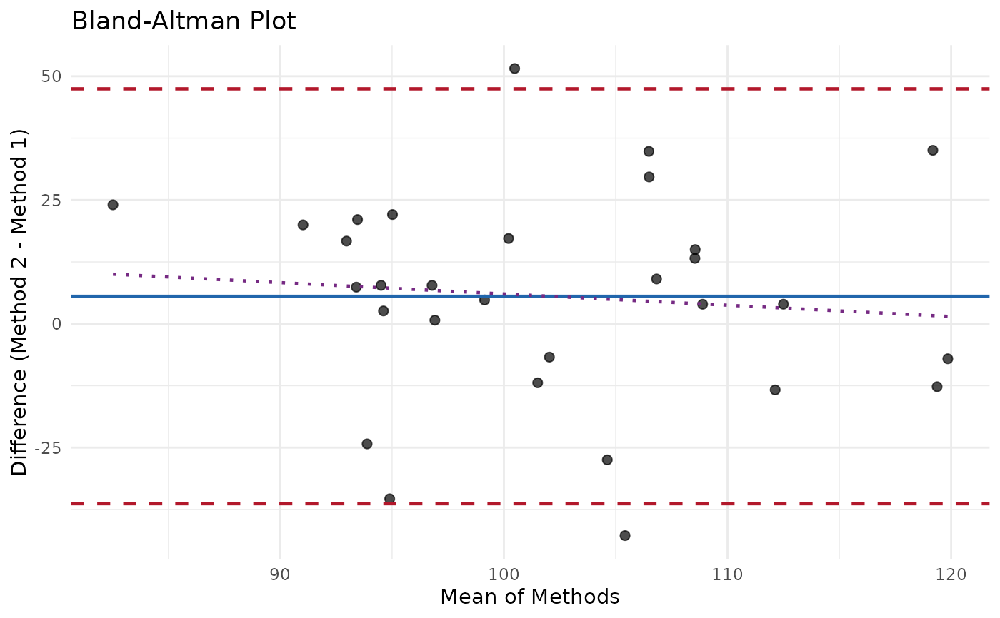

Performs Bland-Altman analysis to compare two measurement methods. This calculates the mean bias, limits of agreement, and optionally tests for proportional bias.
Usage
measure_bland_altman(
data,
method1_col,
method2_col,
id_col = NULL,
conf_level = 0.95,
regression = c("none", "linear", "quadratic")
)Arguments
- data
A data frame containing paired measurements from both methods.
- method1_col
Name of the column containing method 1 (reference) values.
- method2_col
Name of the column containing method 2 (test) values.
- id_col
Optional name of a column identifying paired observations.
- conf_level
Confidence level for intervals. Default is 0.95.
- regression
Test for proportional bias:
"none"(default): No regression test"linear": Test for linear trend in bias"quadratic": Test for quadratic trend
Value
A measure_bland_altman object containing:
data: Tibble with mean, difference, and LOA for each observationstatistics: List of summary statistics (bias, SD, LOA, CIs)regression: Regression results if requested (model, p-value)
Details
Examples
# Compare two blood glucose meters
set.seed(123)
data <- data.frame(
patient_id = 1:30,
meter_A = rnorm(30, mean = 100, sd = 15),
meter_B = rnorm(30, mean = 102, sd = 16)
)
ba <- measure_bland_altman(
data,
method1_col = "meter_A",
method2_col = "meter_B",
regression = "linear"
)
print(ba)
#> measure_bland_altman
#> ────────────────────────────────────────────────────────────────────────────────
#>
#> Bias Statistics:
#> n = 30
#> Mean bias = 5.56
#> SD of differences = 21.38
#> 95% CI for bias: [-2.423, 13.54]
#>
#> Limits of Agreement:
#> Lower LOA = -36.34 (95% CI: [ -50.17 , -22.51 ])
#> Upper LOA = 47.46 (95% CI: [ 33.63 , 61.29 ])
#> LOA Width = 83.8
#>
#> Proportional Bias Test:
#> Slope = -0.2281
#> p-value = 0.6087
#> Result: No significant proportional bias
tidy(ba)
#> # A tibble: 8 × 2
#> statistic value
#> <chr> <dbl>
#> 1 n 30
#> 2 mean_bias 5.56
#> 3 sd_diff 21.4
#> 4 lower_loa -36.3
#> 5 upper_loa 47.5
#> 6 loa_width 83.8
#> 7 bias_ci_lower -2.42
#> 8 bias_ci_upper 13.5
# Visualize
ggplot2::autoplot(ba)
#> `geom_smooth()` using formula = 'y ~ x'
